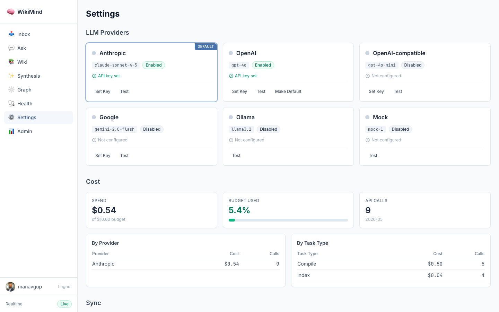

Real evidence: user-defined schema CRUD for wiki compilation rules
$ curl -s -X POST http://127.0.0.1:7842/api/compilation-schemas \
-H "Authorization: Bearer $TOKEN" \
-H "Content-Type: application/json" \
-d '{"name":"Research Summary","description":"Focused on summarizing research papers",
"required_sections":["Abstract","Methodology","Key Findings","Limitations"],
"style":"academic","focus":"research methodology and empirical findings"}'
{
"id": "32702340-5410-470e-b1a6-5811651a5d11",
"name": "Research Summary",
"description": "Focused on summarizing research papers",
"is_active": false,
"article_max_length": null,
"required_sections": ["Abstract", "Methodology", "Key Findings", "Limitations"],
"style": "academic",
"focus": "research methodology and empirical findings",
"concept_max_depth": null,
"concept_naming": null,
"extraction_always_note": null,
"extraction_ignore": null,
"custom_directives": null,
"created_at": "2026-05-09T17:05:03.793740",
"updated_at": "2026-05-09T17:05:03.793750"
}
$ curl -s -X PATCH http://127.0.0.1:7842/api/compilation-schemas/a848bc7a-cb9c-4acf-8f67-959b14b21d88 \
-H "Authorization: Bearer $TOKEN" \
-H "Content-Type: application/json" \
-d '{"required_sections":["Summary","Architecture","Implementation","Trade-offs"],
"style":"technical","focus":"architecture and design decisions"}'
{
"id": "a848bc7a-cb9c-4acf-8f67-959b14b21d88",
"name": "Technical Deep Dive",
"description": null,
"is_active": false,
"article_max_length": null,
"required_sections": ["Summary", "Architecture", "Implementation", "Trade-offs"],
"style": "technical",
"focus": "architecture and design decisions",
"concept_max_depth": null,
"concept_naming": null,
"extraction_always_note": null,
"extraction_ignore": null,
"custom_directives": null,
"created_at": "2026-05-09T16:44:39.514540",
"updated_at": "2026-05-09T17:05:08.605913"
}
Partial update -- only provided fields changed; name and other fields preserved. updated_at reflects the modification time.
$ curl -s http://127.0.0.1:7842/api/compilation-schemas \
-H "Authorization: Bearer $TOKEN"
[
{
"id": "a848bc7a-cb9c-4acf-8f67-959b14b21d88",
"name": "Technical Deep Dive",
"required_sections": ["Summary", "Architecture", "Implementation", "Trade-offs"],
"style": "technical",
"focus": "architecture and design decisions",
"updated_at": "2026-05-09T17:05:08.605913"
},
{
"id": "32702340-5410-470e-b1a6-5811651a5d11",
"name": "Research Summary",
"description": "Focused on summarizing research papers",
"required_sections": ["Abstract", "Methodology", "Key Findings", "Limitations"],
"style": "academic",
"focus": "research methodology and empirical findings",
"updated_at": "2026-05-09T17:05:03.793750"
}
]
name - Schema display name (required, 1-200 chars) description - Human-readable description is_active - Whether this schema is the active default article_max_length - Max length for compiled articles (100-50000) required_sections - Sections the LLM must include in every article style - Writing style directive (max 500 chars) focus - Topic focus directive (max 500 chars) concept_max_depth - Max depth for concept hierarchy (1-10) concept_naming - Convention for concept slugs (max 200 chars) extraction_always_note - Topics to always extract and note extraction_ignore - Patterns to skip during extraction custom_directives - Free-form LLM instructions (max 2000 chars)
POST /api/compilation-schemas Create schema
GET /api/compilation-schemas List all schemas
GET /api/compilation-schemas/{id} Get schema by ID
PATCH /api/compilation-schemas/{id} Update schema (partial)
DELETE /api/compilation-schemas/{id} Delete schema
Evidence generated 2026-05-09 from a live WikiMind instance. All API responses are real.

Captured via authenticated Playwright from wikimind.fly.dev